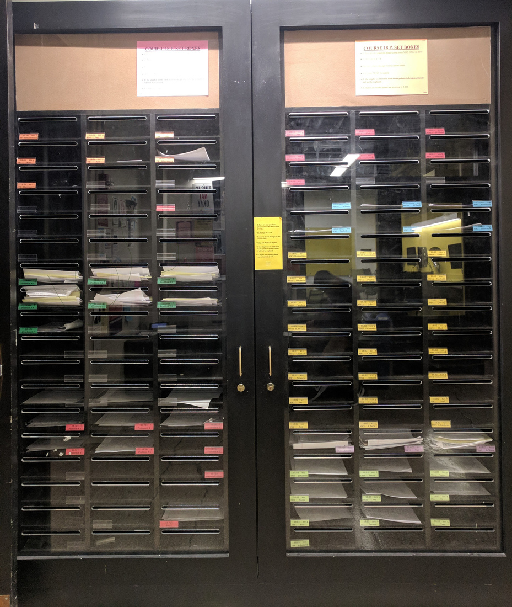
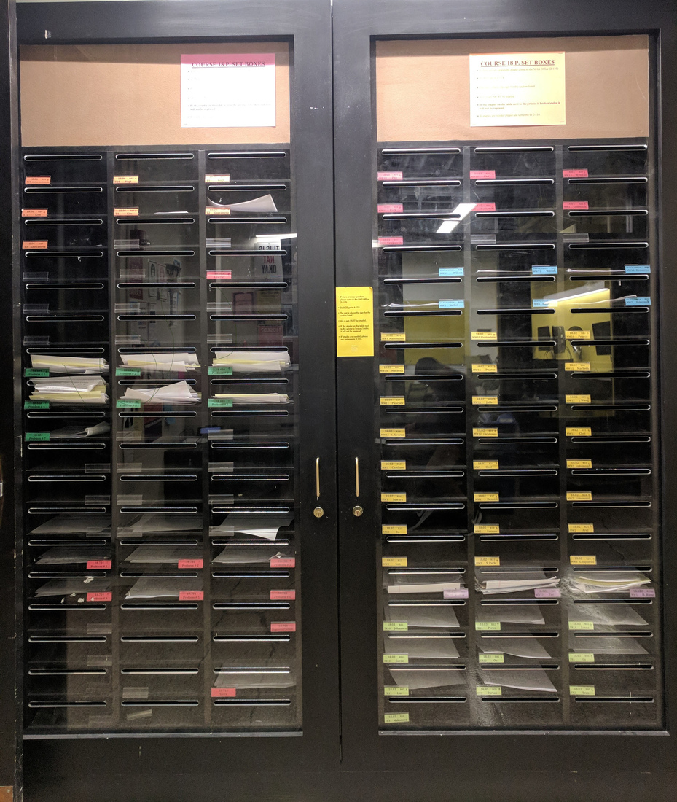

Projects
Read more about Borderline's various projects! Overview of all projects here.
RedBubble Sticker Workshop
2020-11-10
Artists: Aquila Simmons, Margaret Zheng, Michelle Yakubek, Isabel Agbing, Jessica Wu, Mariia Smyk,
Tiffany Louie, Skylar Larsen, Rihn H, Eesha Banerjee, Yijun Yang, Sophia Zhi, Alexander H Greer, Aline Vargas,
Grace Huang, Yi Lin Chen, Isabella Salinas, Jessica Xu, Clara Xu, Philena Liu, Joanna Cao, Amy Zhong, Tolu
Akinbo, Tara Sarma, Alfonso Restrepo, Juliana Covarrubias, Amanda Mei, Ita Futran, Nicole McGaa, Yenthanh Le,
Jessica Ding, Yenthanh, Eesha Banerjee, Jessica Pan
Coordinators: Margaret Zheng, Yijun Yang, Audrey Cui, Gloria Lin, Lucy Zhang, Joyce An
Animators: Yijun Yang, Audrey Cui
This past semester, only about a quarter of MIT students were invited to return to campus. With many facilities closed and classes being taught remotely, Borderline could not paint new AR murals in the tunnels under Building 66, as we would have done during a normal fall semester. But fear not, we realized that art can be placed anywhere-- on the back of your laptop, the outside of your water bottle, the front page of your bullet journal, on your face … you name it! The magic solution? Turning art into stickers! This semester, Borderline conducted a series of virtual hands-on learning workshops intended to recreate the magic of the Borderline process (designing, creating, and animating a mural) despite being fully remote. Through the workshops, participants learned the skills and software to design, export, print, and animate their own stickers! Generously funded by Council for the Arts at MIT (CAMIT), we were even able to print and ship stickers to 20 lucky raffle winners.
Our first-ever sticker-making workshop attracted the interest of over 70 enthusiastic participants. At the event, our Design Co-Chair, Margaret Zheng ‘23, taught and demonstrated the basics of digital art and sticker design using tools such as Photoshop and Procreate. Our Animation Co-Chair Audrey Cui '24 went over the process of uploading designs to RedBubble to be sold on merchandise such as stickers, keychains, and water bottles. After more art magic, 37 stickers designed by our attendees made their way onto Borderline’s Redbubble, showing their full creative glory to the world.
At our second workshop, this one focusing on 2D animation, we made the designs come to life! Taught by our Animation Chairs Yijun Yang ‘24 and Audrey Cui, this workshop covered the fundamentals of 2D animation in both Photoshop and Procreate and ended with an exciting secret santa GIF(t) exchange! Below is a GIF(t) made by Gloria Lin!
Hope you ~stick~ with us for future projects!
Tunnel66
2020-05-30
Artists: Gloria Lin, Margaret Zheng, Lucy Zhang, Casey Johnson, Allan Gelman, Danny Gelman, Jenny
Zhang,
Elaine Xiao, Audrey Cui, Sky Gordon, Joyce An, Nina Morch, Rachel Chae, Greg Peterson, Amber Zheng, Jessica
Pan,
Katie Heslip, Hanjie Liu, Jocelin Su, Dezell Turner, Irina Sigalovsky, Jessica Horowitz, Alassia Lang
Developers: Gloria Lin, Lucy Zhang
Animators: Danny Gelman, Allan Gelman, Jenny Zhang, Aline Vargas Manriquez
"Tunnels connect many of MIT's buildings, and they can even connect a community in quarantine. Inspired by Corona Maison, Tunnel66 is a place to gather and showcase the unique cultures of the MIT and adMIT communities, in lieu of CPW. Each person adds a room to Tunnel66, forming one connected tunnel below."
This is the philosophy behind Tunnel66, Borderline's Spring 2020 project which strives to deliver the magic of the Borderline murals-- a living, breathing collaborative work of art where the MIT community can express themselves and share with others-- to wherever we may be scattered. It's an opportunity to gather and showcase what makes our campus, and our community, so special. As an exciting update, Tunnel66 was featured on the front page of MIT's website, MIT News, and MIT's official Instagram!
Below are some thoughts about Tunnel66 from various Borderline exec, reposted from an admissions blog by Danny and Allan Gelman:
Danny and Allan ’20, Animation Co-Chairs:
Borderline is a club at MIT that started in Spring of 2017 (our freshman spring), when a group
of upperclassmen got funding from the Council of the Arts at MIT to paint a 200-foot long
section of the MIT Tunnels under building 66. Then, augmented reality animations were added to
some of the murals, meaning if you put your phone up to the murals, an animation will play over
it! That semester, we both got to make our own murals and animations, and since then, we have
been part of the exec team as co-AR chairs, teaching anyone who wants to learn, how to make
their own AR animations! Borderline has really expanded past the tunnels through a variety of
projects, and is now a community of people interested in the intersection of art and technology.
CPW is something we, as a club, were really looking forward to as a time to showcase to the
incoming class what Borderline is all about: collaboration and community through art and
technology! So as part of this years CP*, Borderline has launched a “digital tunnel,” Tunnel66,
to stay connected!
psssttt @ 2024 pre-frosh: download the Artivive app to
find some secret AR messages on the tunnel66 murals :D :A
Gloria ’21, President:
I remember being interested in Borderline ever since seeing the club’s AR demo at CPW Midway,
even before I knew I was coming to MIT. Freshman fall, I painted and animated a mural in the
tunnel. The following spring, I painted another mural in the Banana Lounge and joined Borderline
exec. I’m now President of the club during one of the weirdest semesters in recent memory. Like
many other clubs, Borderline was planning and looking forward to events and projects (including
CPW) this semester– then we got sent home.
About a month into Corona-tine, our Pub Chair, Sky, suggested that Borderline do a collaborative art project to connect the community in isolation, and she shared this project. Around the same time, we started getting CP(*) planning emails from ASA, and the idea of Tunnel66 was born. After some more planning, I wrote up the Tunnel66 site, requested the tunnel.mit.edu hostname, and drew the first “room” in a couple days. Since CPW was probably the reason I comMITted, I’m excited to contribute to a project that preserves some of that energy for this year’s adMITs and encapsulates the magic of Borderline’s murals– a living, breathing collaborative work of art where students can express themselves and share with the community.
Margaret ’23, Design Co-chair:
When I first saw the Borderline murals in the tunnels on my campus tour as a rising high school
senior, I didn’t know what it was called, but I knew I just had to come back and walk through
the tunnels once more after the actual tour had concluded. To me, it radiated colors and
inspiring energy of so many kinds, in so many aspects; I could only imagine how many more have
smiled and gazed at those murals, and walked away with thoughts and imaginations. I have wished
that I could contribute to this massive, collaborative masterpiece all up until I got to paint a
mural and join Borderline’s exec board in my first semester at MIT, which I’m beyond grateful
for.
Since then, working behind the magic of those amazing murals with a team of dedicated art-lovers have definitely broadened my understanding of different communities and art styles. While unfortunately our original plans for CPW and the semester have been halted, the idea of Tunnel66 sounded to me just as inspiring and welcoming as a way to showcase aspects of MIT communities – and this time, even prefrosh could join! I drew up a very simple template with a ladder that connects each room in the tower, coz although we are all physically apart, we still want to be together in spirit! I can’t wait to see this tower built collaboratively by members of the MIT community & adMITs and learn more about what everyone else’s been up to!
Jenny ’22, Animation Co-chair:
When I was a junior in high school, my Science Olympiad team came to MIT to participate in the
invitational that MIT hosts every year. While I was running from event to event, trying to
figure out where I’m supposed to be next, I accidentally wandered into the basement and got
outrageously lost, but somehow ended up in the tunnels in building 66. I didn’t even know it was
AR or animation related, but the murals were stunning. I couldn’t stay for long, but I knew I
definitely wanted to come back one day and contribute some way or another to the organization
behind it. Freshman year, I got to take a better look at it and realized the murals were
animated!! I had never really drawn or painted, but I started learning Blender (a 3D modeling
program) to try my hand at digital animation. I was able to join Borderline exec my sophomore
fall, and I’m so grateful for this opportunity to make art more accessible to others, and to
bring a splash of color and joy to MIT students who often walk through the tunnels to get around
campus. Tunnel66 is an interactive, community building project that brings together all of
Borderline’s unique strengths, combining AR, art, and a sense of community to all.
Lucy ’21, Financial Chair:
The week before orientation my freshman fall was the first time I saw the tunnels under building
66, and the moment I saw the first animation I knew I had to get involved with Borderline.
Having never been very good at drawing, being an artist always seemed like an unattainable task
to me, but animation has helped me bridge the gap between art and technology. I’m hoping to
continue to promote art across MIT’s campus!
UA x Borderline:
Murals and Magic in the Compton Lounge
2019-05-16
In collaboration with Undergraduate Association (UA) Innovation
Funded in part by the MIT Division of Student Life (DSL)
Coordinators: Jessica Xu (Borderline), Kalia Pfrang (UA), Malte Ahrens (UA)
Artists: Jessica Xu, Gloria Lin, Lara Ketonen, Jessica Horowitz, Dipo Doherty, Patricia Gao, Megan
Ochalek, Megan Fu, Juliana Green
Animators: Sharon Lin
Video and Photos: Malte Ahrens and Jessica Xu
The sounds of students jostling in the Infinite die away upon stepping into the Compton Lounge at room 26-110. Colorful bean bags, a coffee and tea station, and Legos invite the student into the space, flooded with natural light from the floor-to-ceiling windows. Beyond, groups of students are sitting at tables working or chatting, surrounded by bright bunches of yellow bananas. A large alcove around the corner is stocked with pillows and blankets for students looking to nap or decompress. The walls are decked with large paintings featuring fantastical scenes supported by a backdrop of dreamy cotton candy clouds.
Each original artwork is unique in subject and styles range from realism to pop art to abstract expressionism. The alcove area artworks cohesively form a gallery of thought-provoking artwork that promotes themes of tranquility, reflection, and discovery for students seeking respite from their busy days. The more lighthearted artworks in the main space are sure to put a smile on students’ faces as they grab a banana and catch up with friends; check the gallery to see which artworks have been animated! Be sure to swing by the Banana Lounge sometime to check out the art and help yourself to a banana!
Showcase Banner
Attendees enjoying the art and refreshments at the gallery launch (5/16/19)
The first concept board the artists put together
Before image and progress image of the backdrop
Nap alcove after installing artwork
Lighthearted artwork corner! (With Malte Ahrens, then Chair of UA Innovation)
College of Computing Opening
2019-02-26
In collaboration with Sam Magee and Katherine Higgins
Augmented Reality Workshop Leaders: Jierui Fang, Danny Gelman, Allan Gelman
Animators: Angelica Castillejos, Melody Wu, Edmond, Wanyi Xiao, Ohyoon Kwon, Heya Lee, Natasha K Hirt,
Wanyi (Sherry) Xiao, Yi Yang, Peiling Jiang, Jacqueline Chen
As part of the College of Computing Opening, Borderline helped organize The Mural Augmentation Challenge! This was an opportunity for MIT students to add their own Augmented Reality animations to the Stata Street murals made by ten MIT students in December 2018. As part of the challenge, Borderline held an AR workshop in the Stata Center to teach students one-on-one how to make their AR animations from scratch.
In parallel to the Mural Augmentation Challenge, a ten foot printed copy of the mural painted in the Suffolk County House of Correction was also hung in the Stata Center for the College of Computing Opening. This project was a collaborative effort between Sara Brown, Senior Lecturer for MTA, MIT students in her IAP class, the ESG Prison Initiative, and the female inmates at the prison.
The winners of the The Mural Augmentation Challenge were:
1. Heya Lee for the augmentation of Shichao Yue's image titled: A Reflection of Colors.
2. Natasha Hirt for the augmentation of Navid Abedzadeh's image titled: MIT Stata.
3. Wanyi (Sherry) Xiao, Yi Yang, Jacqueline Chen, and Peiling Jiang for the augmentation of the HOC Mural
project's shared mural from the South Bay House of Corrections and MIT collaboration.
House of Correction Mural Project
2019-01-30
In collaboration with The Suffolk County Sheriff's Department, MIT Music and Theater Arts, The Educational
Justice Institute (TEJI), and Arts at MIT
Photos: Leon Yim
Participating MIT Students, Faculty, and Staff: Joyce An,
Emma W Gong,
Margaret Manto,
Rachel Bennett,
Leah Talatinian,
Amanda Venegas,
Kay Lowden,
Melody Mui,
Danielle Olson,
Reva Ranka,
Angelica Castillejos,
Leon Yim,
Olga Medrano Martin del Campo,
Taylor Kmetz,
Helen Read,
Sheila Lemke,
Christopher Miller,
Lulu Tian,
Wanyi Sherry Xiao,
Lauren TenCate,
SoHee Ahn,
Carole Cafferty,
Sam Magee,
Sara Brown
Over MIT’s Independent Activities Period (IAP) in January 2019, over a dozen MIT students and just as many women inmates worked together for three hours a day on a two-story mural in the South Bay House of Correction. The project and class were led by Sara Brown, MIT Assistant Professor and Director of Design for MIT Music and Theater Arts, and Peggy Rambach, arts teacher at South Bay. A replica of the mural has been displayed on campus in the MIT List Visual Arts Center.
During the first part of the project participants practiced key painting techniques and reflected on images
with the greatest symbolism in their own lives, eventually agreeing on a core set of visuals including a
mother
lovingly cradling her child, a sunset radiating through an open door, and water droplets descending from an
eye
in the sky. After learning and practicing a wide range of painting and composition techniques, participants
split the two-story mural into nine panels and collaborated to combine them into one cohesive work. Although
the
class and project themselves have ended, the parallel murals exhibited at the South Bay House of Correction
and
at MIT serve as a reminder that the lessons learned, memories created, and friendships formed will remain
intact
for far longer.
News articles about the project: Arts
at MIT,
WBUR (radio)
Borderline in Brazil
2018-06-04
Animators: Julia Rue, Jierui Fang, Lucy Zhang, Giovanna Casimiro
Muralists: Tiago, Grazie, Lady Guedes, Aline
In collaboration with Giovanna Casimiro, Borderline created two augmented murals in Porto Seguro and Vila
Itororó, two important cultural centers of São Paulo, bridging the spacial gap between the locations
through the rich graffiti heritage, street textures, and sights of Brazil. We worked with Efêmmera, a
feminist graffiti organization striving to empower women street artists, staff at the cultural centers, and
outside independent artists to bring our vision to life. We're so excited to share our experience with
you, brought back through sights, sounds, and nostalgic recollections! <3
Some Thoughts From Brazil:
Jierui- Arriving in Brazil, I was surprised at how colorful, modern, and geometric all the
buildings were. I was also surprised to learn that it was winter in São Paulo. Despite the jet lag, I loved
listening as
filmmaker Alessandra Emy and graffiti artist V taught about the unique Brazilian pixo style, that originated
right here in São Paulo.

Julia- São Paulo definitely has character. Graffiti and public sculptures were everywhere, and old buildings were squashed between new modern architecture, but even the new buildings had pichacao (tagging) on them. The streets were strangely quiet and open because we had arrived in the middle of a fuel strike. Strikers, mainly truckers, angry at the increase in gas price, were blocking the roads into the city, preventing gasoline, but also inadvertently groceries and other materials, from entering the city. Such a strike has never happened before, and everyone was worried, but the city continued to function, and we got to experience a very lively metropolitan.
We got to work with a different set of street artists everyday, which was both a logistical nightmare, but also extremely inspiring and informational. The artists, our coworkers, and even random people we would meet on the street seemed to share the belief that street graffiti was not so much an act of rebellion, as an active and very effective way or building hope and happiness in the city, especially for a country that is going through hard times.
Lucy- On our second day working in the Fablab, and we learned a new technique that neither of us had ever worked with before - acid printing! We each started with a thin, 3”x3” piece of metal which we etched our initial designs into. Next, we added varnish to select areas of our pieces before acid washing them, then repeating the process multiple times. My final print was a butterfly with some clouds around. Unlike Julia and Jierui, I don’t have a very strong artist background so I was pleasantly surprised at how well my print came out.
Jierui- At Vila Itororó, we learned about the cultural and historical importance of this center and got a tour to see the new community center that was opened there and the ongoing restorations. It was so fun to chat with local visitors while trying out all sorts of new fruits from a supermarket close by and planning the mural with Grazie. We later visited Civic-co a social entrepreneurship coworking space to explore new ways that MISTI Brazil (whose support was essential to this project) could expand partnerships in São Paulo.
Julia- Saturday was our first completely free day to explore! Going to the beach was too risky with the fuel strike still ongoing, so we crossed the street to Park Ibirapuera. But a feira livre was set up right on our street, so of course we had to first fill our hands with pastels, fruit, and bottles of cashew juice before our adventures. The park was humongous, and included a skate park, a museum, a planetarium, and more. After, we hiked through a state park to get some good views of the city and see some howler monkeys.
Jierui- Sunday morning, we got to explore downtown, stopping at a Liberdade (Japantown) food market, an amazing art exhibit on African influence in Brazil, beautiful churches, and a weekly flea market. Lucy - That was also our final day in Sao Paulo, so to top it all off we went to the Pride Parade! Apparently, it's the largest one around the globe. Going into the crowds of people, the energy was amazing, with rainbows, music, and dancing everywhere. It felt like a place where everyone, regardless of sexual orientation, ethnicity, or gender, could feel safe and have a great time. Also check out our takeover of the MIT MISTI Brazil Instagram account!
OneWorld
2018-05-15
In collaboration with Vivian Zhong
Animators: Jierui Fang, Lucy Zhang, Danny Gelman, Allan Gelman
Borderline was invited to create augmented reality animations for MIT's One Sustainable World Tent Parties to
highlight the impact of climate change on major world cities. We hope everyone had a wonderful night and came
away with memorable, new experiences and understanding! Here are some scenes from the parties.
Borderline at the MFA
2018-03-28
Animators: Jierui Fang, Danny Gelman, Lucy Zhang, Julia Rue
Filming and Video: Matt Feng, Jessica Xu, Jierui Fang, Julia Rue
Inspired by MoMAR's installation Hello, we're from the internet., Borderline decided create our own
intervention at the MFA in Boston. And which better place to do it at than the highly social media friendly
Takashi Murakami exhibit? Borderline added augmented reality animations to several of
the artworks there. Check out our animations at the exhibit closing April 1st at the MFA to see for yourself!
We thought the Murakami exhibit was especially fitting for Borderline to animate and augment, with elements
of
animation present within the handscrolls exhibited there and the encouraged social media interaction.
Works animated:
Dragon in Clouds—Red Mutation (2010)
Kawaii—Vacances (2010)
Lots, Lots of Kaikai and Kiki (2009)
Enso: Zen
AR Campus Landmarks
2018-03-28
Animators: Meital Hoffman (Hayden Library), Sam Seaman (Pset Box)
Borderline animators decided to add a little AR magic to some well-frequented campus landmarks! Download Artivive to reveal the
animations
hidden
in the Hayden Library mural (left) and Pset Box (right).
 
